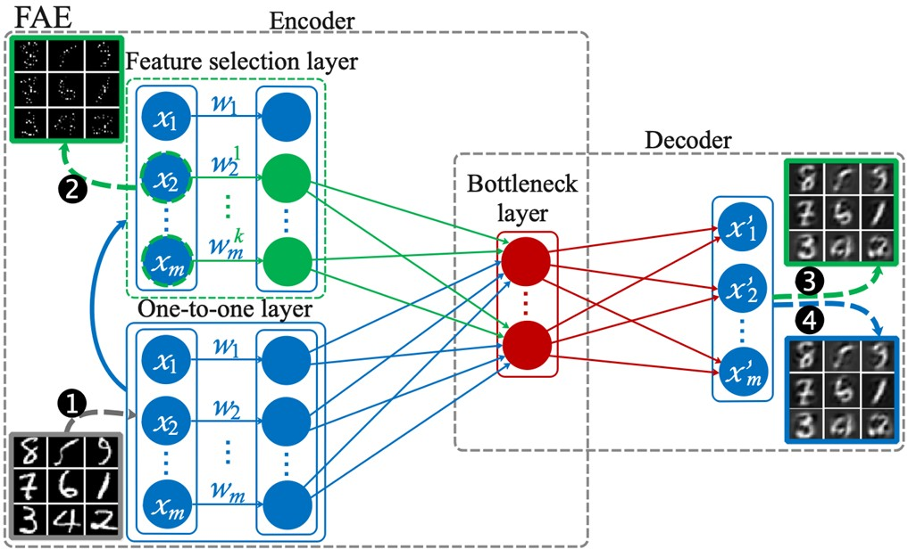
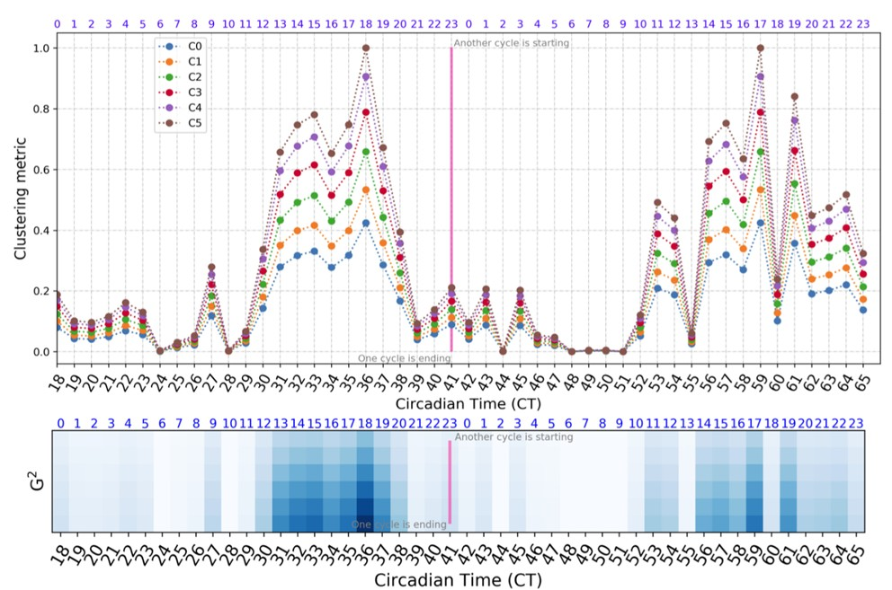
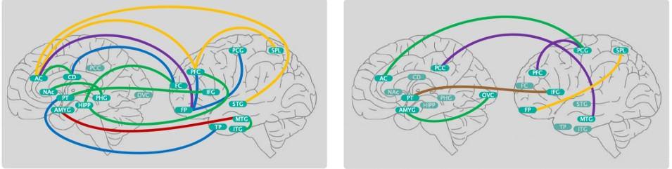
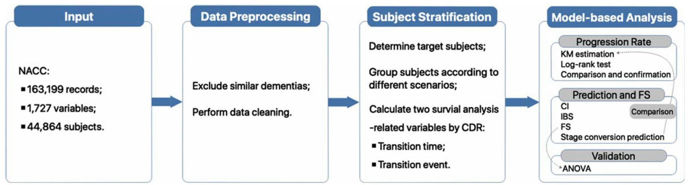
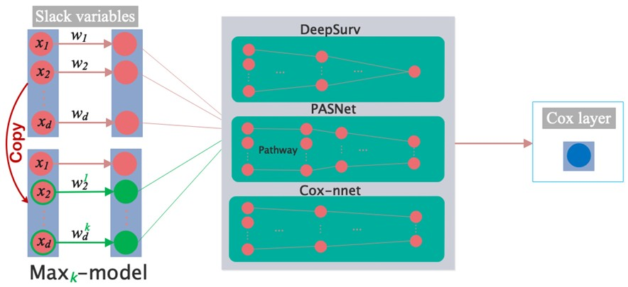
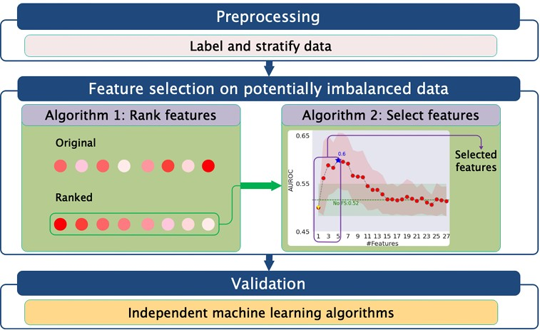
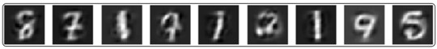
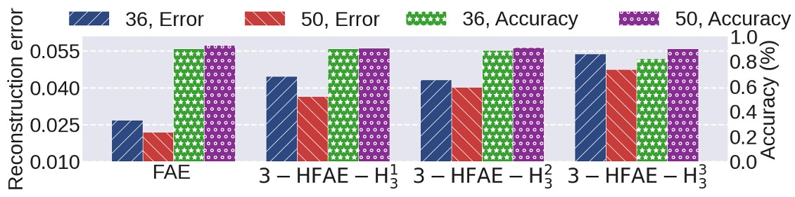
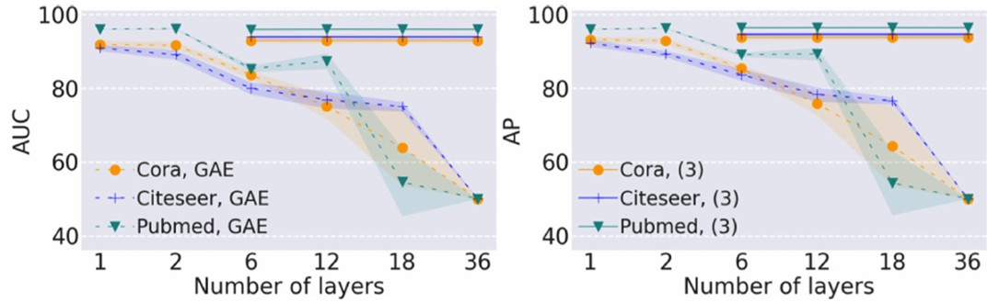
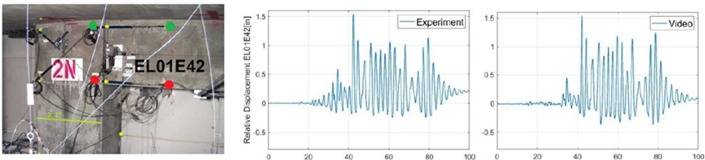

<p class='titlep'> </p> # Intro <hr> <br> <br> <br> X. Wu
# Outline [<p class="hover-underline-animation">Me</p>](#/ch1) [<p class="hover-underline-animation">Bioinfo</p>](#/ch2) [<p class="hover-underline-animation">CS</p>](#/ch3) [<p class="hover-underline-animation">Others</p>](#/ch4)
# Me
<div class="definition-container"> <div class="definition-title">Me</div> <div class="definition-shadebox"> <div id="roundbox"> <b>Research</b>: Build models and solve problems - ML, stats, and data analysis—FS to GNN and survival analysis—recently LLMs <hr style="border: none; border-top: 2px dashed orange;"> - Python, (sometimes) R - NeurIPS, AAAI, IJCAI, IEEE TNNLS, AD Journals<div class="loading-dots"> <span></span> <span></span> <span></span> </div> </div> <br> <div id="roundbox"> <b>Teaching</b>: Undergraduate - CS (Advisor and Coordinator); Gradudate - MBA </div> </div> </div>
# Bioinfo ### (2021 - Present, first author)
> ## Project 1 <div class="definition-container"> <div class="definition-title">Dataset</div> <div class="definition-shadebox"> - L1000GeneExpression is bulk transcriptomics (not single-cell, not genomics). - L1000 directly measures ~943 “landmark” genes and linearly infers the rest, enabling cheaper, high-throughput profiling (GEO/LINCS: 10,463 genes; 111,009 samples). </div> </div>  <img src="./images/fig7.jpg" alt="fig" width="300" height="300"> <p style="font-size: 28px; text-align: left">📚<a href="https://ojs.aaai.org/index.php/AAAI/article/view/17242">Fractal Autoencoders for Feature Selection</a></p> <div class="question-container"> <div class="question-title">Note</div> <div class="question-shadebox"> Achieves comparable reconstruction with ~800 genes (matching L1000’s reconstruction quality) —about 15% fewer </div> </div> > ## Project 2 <div class="definition-container"> <div class="definition-title">Dataset</div> <div class="definition-shadebox"> - Untimed bulk genome-wide gene expression microarrays from 19 human brain regions (MSBB/AMP-AD; ~60 individuals; Affymetrix U133A/U133B; AMYG & NAc on U133 Plus 2.0) - Validation data: Time-labeled mouse liver microarray time series (GSE11923; hourly for 48 h, pooled samples) </div> </div>   <p style="font-size: 28px; text-align: left">📚<a href="https://arxiv.org/abs/2208.12811">PRIME: Uncovering Circadian Oscillation Patterns and Associations with AD in Untimed Genome-wide Gene Expression across Multiple Brain Regions</a></p> <div class="question-container"> <div class="question-title">Note</div> <div class="question-shadebox"> PRIME is an unsupervised PCA + matrix-factorization method that recovers circadian rhythms from untimed bulk brain transcriptomes, eliminating the need for collection timestamps. It turns widely available untimed datasets into actionable circadian signatures and reveals Alzheimer’s-related loss of inter-region synchrony, enabling scalable circadian–AD studies without time-stamped sampling. </div> </div> > ## Project 3 <div class="definition-container"> <div class="definition-title">Dataset</div> <div class="definition-shadebox"> NACC cohort (2005–2020): 44,864 subjects, 163,199 visit records, 1,727 variables—longitudinal clinicodemographic, genetics (e.g., APOE), and cognitive measures. </div> </div>  <p style="font-size: 28px; text-align: left">📚<a href="https://journals.sagepub.com/doi/abs/10.3233/JAD-220590">Machine learning approach predicts probability of time to stage-specific conversion of Alzheimer’s disease</a></p> <p style="font-size: 28px; text-align: left">📚<a href="https://alz-journals.onlinelibrary.wiley.com/doi/full/10.1002/trc2.12363">Deep learning algorithm reveals probabilities of stage-specific time to conversion in individuals with neurodegenerative disease LATE</a></p> <div class="question-container"> <div class="question-title">Note</div> <div class="question-shadebox"> Uses DeepSurv to deliver individual, stage-specific time-to-conversion probabilities across AD/LATE stages; reports CI ≥ 0.86 and IBS < 0.10, and identifies top predictors for each transition, supporting personalized prognosis and intervention timing. </div> </div> > ## Project 4 <div class="definition-container"> <div class="definition-title">Dataset</div> <div class="definition-shadebox"> ROSMAP bulk brain microarray (primary): 430 post-QC samples (originally 490), 48,803 features (~37,846 genes with duplicate probes kept). Labeled into LATE+AD (41), LATE (75), AD (31), controls (283) using Braak, CERAD, and TDP-43 stage; RNA array from RADC/AD Knowledge Portal </div> </div> <img src="./images/fig6.jpg" alt="fig" width="800" height="500"> <p style="font-size: 28px; text-align: left">📚<a href="https://journals.plos.org/plosone/article?id=10.1371/journal.pone.0256648">Random forest-integrated analysis in AD and LATE brain transcriptome-wide data to identify disease-specific gene expression</a></p> <div class="definition-container"> <div class="definition-title">Note</div> <div class="definition-shadebox"> Disease-specific signatures (AD vs LATE vs AD+LATE): From 48,803 probes, IMRF yields a compact 31-gene panel distinguishing four classes and additional panels for pairwise tasks—tackling the hard problem of separating LATE from AD at the transcriptome level. Many selected genes (e.g., CLEC7A, NDUFA7, KEAP1, STARD7) align with prior neurodegeneration literature, while others emerge as new hypotheses for AD/LATE biology. </div> </div> > ## Project 5 <div class="definition-container"> <div class="definition-title">Dataset</div> <div class="definition-shadebox"> Breast cancer (198 subjects; ~80 variables after one-hot: 76 genes + ER, tumor size, grade, etc.). SUPPORT (Study to Understand Prognoses and Preferences; 9,105 subjects, 59 variables). GBM (TCGA) glioblastoma (522 subjects; 5,567 genes + age). </div> </div>  <p style="font-size: 28px; text-align: left">📚<a href="https://arxiv.org/abs/2209.15450">Explainable Censored Learning: Finding Critical Features with Long Term Prognostic Values for Survival Prediction</a></p> <div class="question-container"> <div class="question-title">Note</div> <div class="question-shadebox"> Plug-and-play explainability for survival DL: EXCEL adds a lightweight Max-k selection layer to DeepSurv, Cox-nnet, PASNet, etc., jointly training the model and selecting the k most informative variables—turning black-box survival nets into variable-level explanations. Provides tight generalization/error bounds for the induced Max-k model vs. the full model, supporting why the selected subset can preserve performance. On GBM and Breast cancer, top features align with known clinical/biological factors (e.g., HIST3H2A, PRODH), supporting interpretability for clinicians. </div> </div> > ## Project 6 <div class="definition-container"> <div class="definition-title">Dataset</div> <div class="definition-shadebox"> - ROSMAP (RADC): 508 participants, 33 variables (lifestyle/clinical) labeled into LATE, AD, LATE+AD, Control using Braak, CERAD, and TDP-43 staging. - NACC: 9,256 participants after filtering alcohol-intake indices (ALCDEM/ALCDEMIF), labeled as LATE+AD (2,117), LATE (965), AD (2,242), Control (3,932). - ROSMAP blood tests (with medication & diet covariates). </div> </div>  <p style="font-size: 28px; text-align: left">📚<a href="https://arxiv.org/abs/2209.05438">Alcohol Intake Differentiates AD and LATE: A Telltale Lifestyle from Two Large-Scale Datasets </a></p> <p style="font-size: 28px; text-align: left">📚<a href="https://alz-journals.onlinelibrary.wiley.com/doi/full/10.1002/alz.060446">Sex-adjusted blood biomarkers differentiate AD from LATE</a></p> <div class="question-container"> <div class="question-title">Note</div> <div class="question-shadebox"> Finds alcohol consumption as a top lifestyle factor that differentially associates with AD vs. LATE and highlights an APOE ε4 carrier subgroup where light-to-moderate intake is protective for both, stronger for AD than LATE; validated across two independent cohorts. Shows that small, sex-adjusted blood-biomarker sets can differentiate AD from LATE better than using all markers. </div> </div>
# CS ### (2021 - Present, first author)
> ## Project 1 <div class="definition-container"> <div class="definition-title">FAE</div> <div class="definition-shadebox"> $$ \min_{{\rm W}_{\rm I}, f, g}\|\|{\rm X}-f(g({\rm X} {\rm W_I}))\|\|^2_F+\lambda_2\|\|{\rm W_I}\|\|_1\quad {\rm s.t.}\quad {\rm W_I}\geqslant 0. $$ <img src="./images/fig9.jpg" alt="fig" width="600" height="40"> <!----> </div> </div> <p style="font-size: 28px; text-align: left">📚<a href="https://ojs.aaai.org/index.php/AAAI/article/view/17242">Fractal Autoencoders for Feature Selection</a></p>  > ## Project 2 <div class="definition-container"> <div class="definition-title">Algorithmic stability and generalization</div> <div class="definition-shadebox"> $$ \min_{{\rm W}_{\rm I}, f, g}\|\|{\rm X}-f(g({\rm X}(\Phi({\rm W_I})^{\max_k})))\|\|^2_F+\lambda_1\|\|{\rm X}-f(g({\rm X} {\rm (\Phi(W_I)) }))\|\|^2_F. $$ </div> </div> <p style="font-size: 28px; text-align: left">📚<a href="https://proceedings.neurips.cc/paper/2021/hash/a546203962b88771bb06faf8d6ec065e-Abstract.html">Algorithmic stability and generalization of an unsupervised feature selection algorithm</a></p> <div class="definition-container"> <div class="definition-title">Uniform Stability</div> <div class="definition-shadebox"> $$ \left\|\left\| \ell^{\text{selec}}\left({\Phi_{*}}^{\max_k}, \cdot \right) - \ell^{\text{selec}}\left({\left({\Phi_{*\hspace{0.1cm}}^{\setminus j}}\right)}^{\max_k} , \cdot\right)\right\|\right\|_{\infty}= \mathcal{O}\left( \frac{1}{n \min\{\sqrt{\lambda_1}, \lambda_1\}} + \frac{1}{n} \right) $$ </div> </div> <div class="definition-container"> <div class="definition-title">Generalization Error</div> <div class="definition-shadebox"> $$ L^{\text{selec}}\left(\Phi_{*\hspace{0.1cm}}^{\max_k}, S\right)- {L_{\text{emp}}^{\text{selec}}}\left(\Phi_{*\hspace{0.1cm}}^{\max_k}, S\right)= \mathcal{O}\left( \frac{\sqrt{\ln \left(\tfrac{1}{\delta}\right)}}{\sqrt{n}\min\{\sqrt{\lambda_1} \lambda_1\}}+ \sqrt{\tfrac{\ln \left(\tfrac{1}{\delta}\right)}{n}} \right) $$ </div> </div> > ## Project 3 <div class="definition-container"> <div class="definition-title">Top-$k$ regularization for classification</div> <div class="definition-shadebox"> $$ \min_{\mathbf{w} \in \mathbb{R}^m, \mathbf{F}} \mathrm{CE}\left(y, \mathbf{F}(X)\right)+ \lambda_3 \mathrm{CE}\left(y, \mathbf{F}^{\max_k}(X)\right)+ \lambda_2 \|\|\mathbf{w}\|\|_1 + \lambda_1 {\|\|\mathbf{w}\|\|_2} $$ </div> </div> <p style="font-size: 28px; text-align: left">📚<a href="https://arxiv.org/abs/2106.02197">Top-k Regularization for Supervised Feature Selection</a></p> <div class="definition-container"> <div class="definition-title">Top-$k$ error bound</div> <div class="definition-shadebox"> There exists a $\delta$ that is greater than a constant depending only on $k$, $\forall \mathbf{H}\in \mathcal{H}_k$ $\exists\mathbf{F}^{\max_k}\in {\mathcal{F}_2}^{\text{top-}k}$ , we have $$ \sup_{x \in \mathcal{X}}\|\mathbf{H}(x) - \mathbf{F}^{\max_k}(x)\|\leqslant C(k)\eta (\delta / \eta)^{-2/(k+1)} \log(\delta/\eta)+ C(k)\delta Q^{-(k+3)/(2k)} $$ </div> </div> <img src="./images/fig14.jpg" alt="fig" width="1200" height="200"> > ## Project 4  <p style="font-size: 28px; text-align: left">📚<a href="https://pmc.ncbi.nlm.nih.gov/articles/PMC9754798/">Stabilizing and enhancing link prediction through deepened graph auto-encoders</a></p> <div class="definition-container"> <div class="definition-title">${\rm DGAE}_{\alpha}$</div> <div class="definition-shadebox"> $$ Z = \alpha_k \widetilde{A} f_{k-1}'\left( \cdots \big( \alpha_1 f'_1(X) + (1-\alpha_1) g_1(\widetilde{A}X) \big) \right) \big((1-\beta_k)W_k + \beta_k {\rm I}_k\big) $$ $$ +(1-\alpha_k)\widetilde{A}g_{k-1}\left(\widetilde{A}X\right)\left((1-\beta_k)W_k + \beta_k {\rm I}_k\right) $$ </div> </div> <div class="definition-container"> <div class="definition-title">Theorem</div> <div class="definition-shadebox"> A $k$-layer ($k \geq 3$) $\mathrm{DGAE}_{\alpha}$ is a linear combination of $2$-order to $k$ - order polynomial filters with arbitrary combination coefficients. </div> </div>
# Others ### (2021 - Present)
<div class="question-container"> <div class="question-title">scRNAseq</div> <div class="question-shadebox"> Modified AE-based algorithm, clustering-based algorithm, and deepset algorithm on single-cell datasets, such as Gene Expression (scRNA-seq - microglia) - Synapse </div> </div>  <div class="question-container"> <div class="question-title">Singing Syllabi</div> <div class="question-shadebox"> Singing Syllabi with Virtual Avatars https://github.com/xinxingwu-uk/SSVA </div> </div>
# Thanks <hr> <p><img src="images/github.gif" align="left" height="5%" width="5%"> <a href="https://github.com/xinxingwu-uk">https://github.com/xinxingwu-uk</a></p>